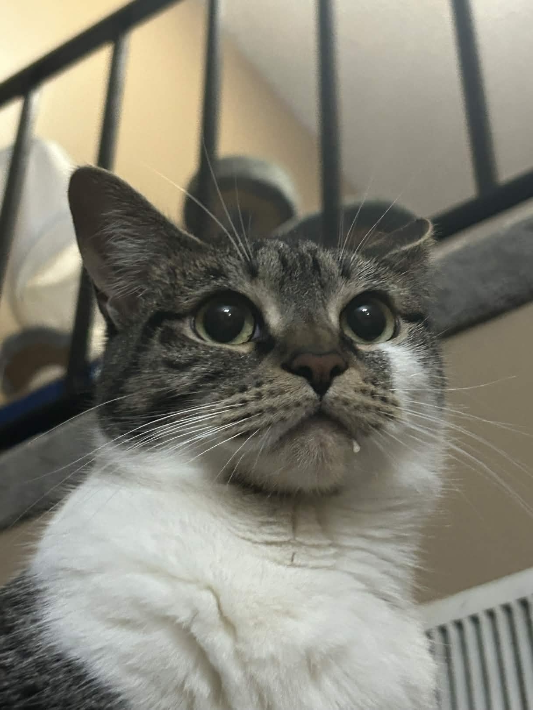
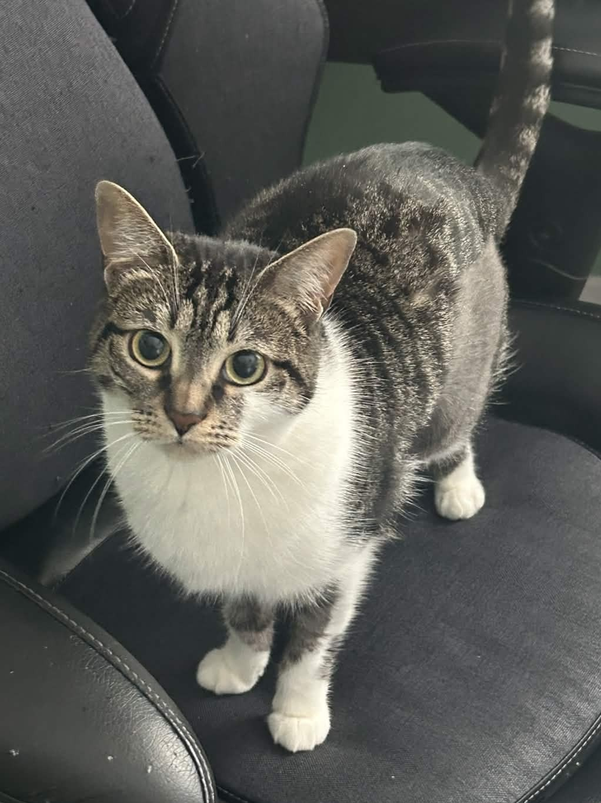
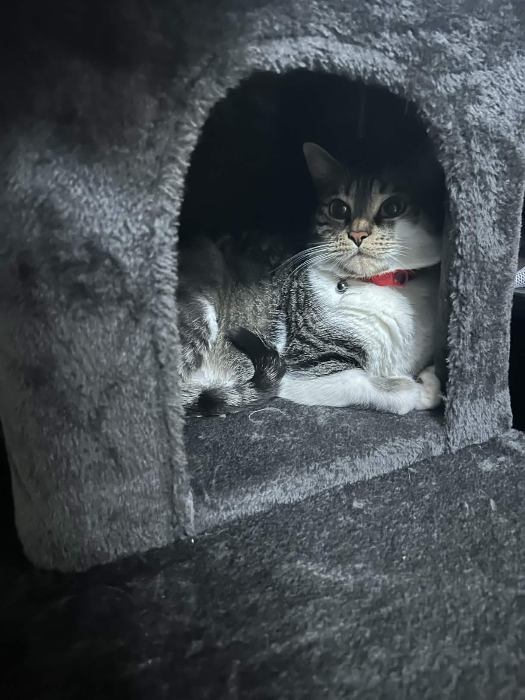
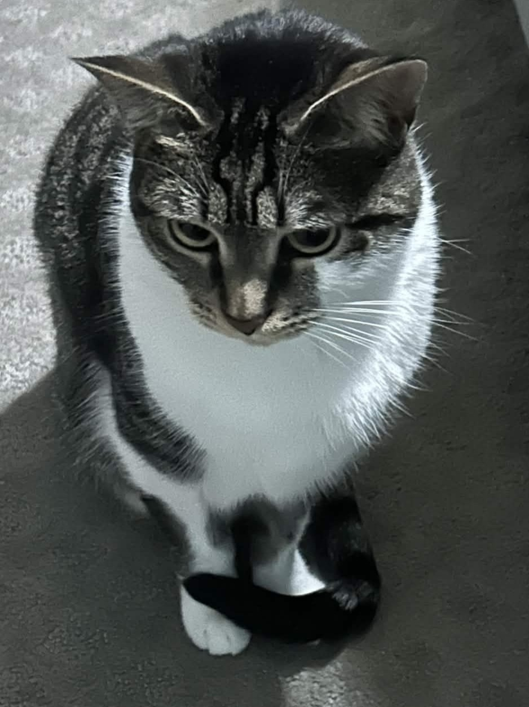

salt!
salt's birthday is april 28th, 2022. i got her from my cousin's friend on june 24th, 2022, when she was two months old! her mom was a pregnant stray who got adopted by my cousin's friend, and she has a twin sister named pepper who lives with someone else.
of the two, salt is older by a few months, but she's also smaller... it's the older sibling curse.
we got salt when i graduated, in exchange for me living at home and commuting.
salt is quite attached to my younger brother. i'm probably her least favorite person in the house because i do all the scary things, like nail trims, meds, and vet visits :(
fun fact: salt knows how to open doors, even locked ones!



